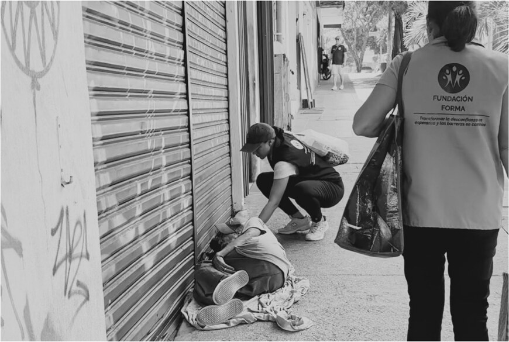

Estrategias integrales
Desarrollamos, articulamos y gestionamos estrategias jurídicas, sociales y comunitarias para eliminar barreras de acceso.
Fundación Forma · Cali, Colombia
Construimos puentes entre quienes pueden ayudar y quienes más lo necesitan.

Nuestra razón de ser
Cada ser humano posee el mismo valor y la misma dignidad. Sin embargo, muchas personas enfrentan realidades marcadas por la pobreza, el abandono, la exclusión o la falta de acceso a la justicia y a servicios esenciales.
La Fundación Forma nace para transformar esas barreras en oportunidades, acercando poblaciones en condición de vulnerabilidad a instituciones, organizaciones y personas que pueden contribuir a garantizar sus derechos y fortalecer sus proyectos de vida.
Acción con propósito
Desarrollamos, articulamos y gestionamos estrategias jurídicas, sociales y comunitarias para eliminar barreras de acceso.
Acercamos a poblaciones vulnerables con entidades públicas, organizaciones, empresas y programas sociales.
Trabajamos junto a las personas para fortalecer sus capacidades y acompañar la construcción de sus proyectos de vida.
Apoyamos organizaciones de base comunitaria para ampliar el alcance y multiplicar el impacto colectivo.
Nuestro modelo
Articulamos capacidades y necesidades para que los recursos, servicios y oportunidades lleguen a quienes más los necesitan.
 FORMAArticulación jurídica
FORMAArticulación jurídica

Nuestra misión
Transformar la desconfianza en esperanza y las barreras en caminos de oportunidades, sirviendo a las poblaciones vulnerables que no tienen acceso a servicios legales, promoviendo el goce efectivo de sus derechos y contribuyendo a la construcción de una vida digna.
“Que las semillas de esperanza crezcan hasta convertirse en grandes árboles llenos de frutos para las personas y comunidades que más lo necesiten.”
Sé parte de Forma
Puedes donar tiempo, recursos, bienes o conocimiento; convertirte en aliado; o ayudarnos a conectar nuevas oportunidades. Cada contribución se gestiona con transparencia y responsabilidad.